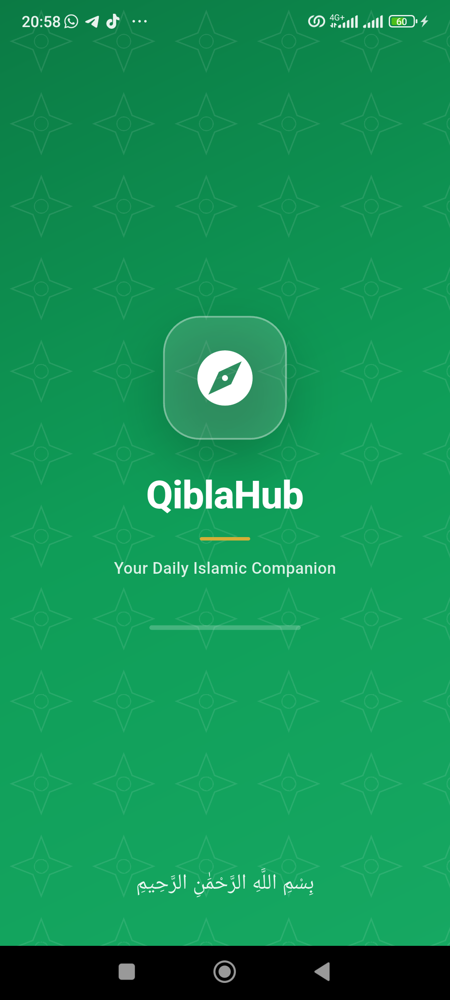
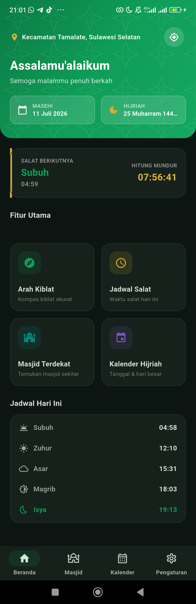
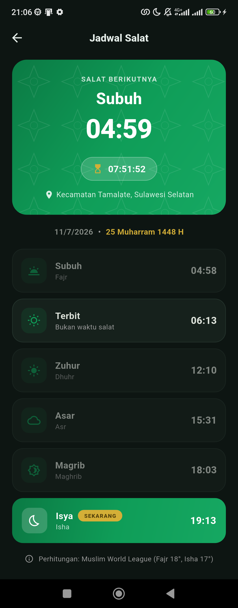
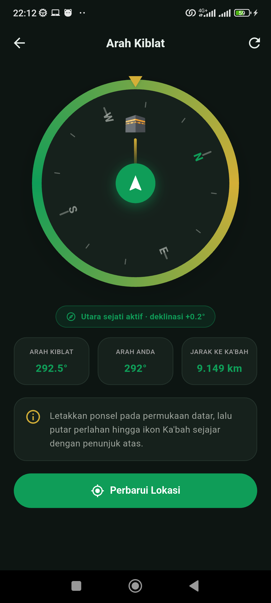
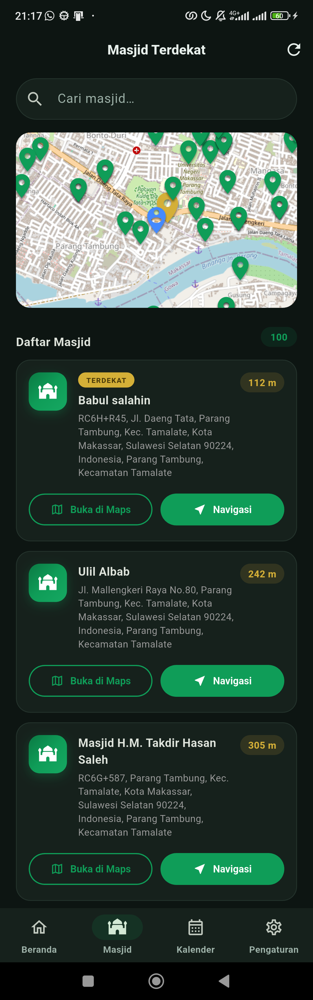
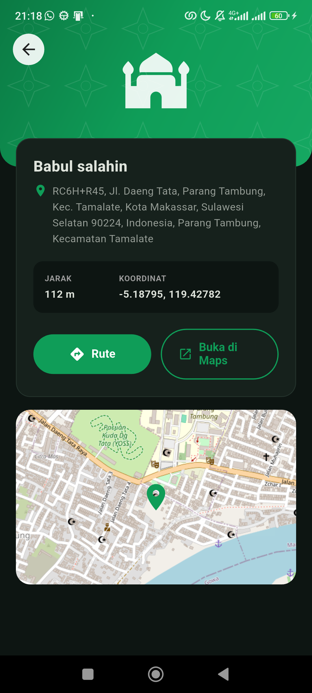
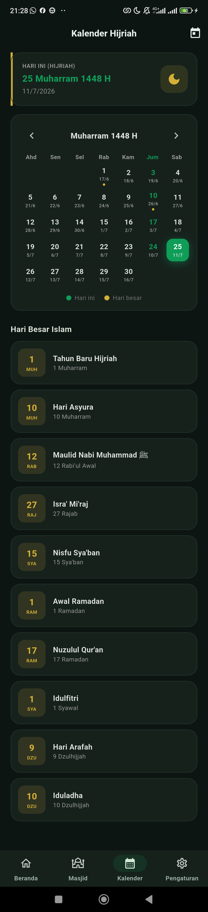
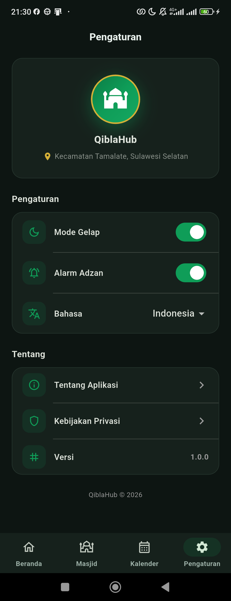

PENGEMBANGAN APLIKASI DIGITAL ARAH KIBLAT, WAKTU SALAT, DAN KALENDER HIJRIAH "QIBLAHUB" BERBASIS ANDROID UNTUK MASJID DAN AMAL USAHA MUHAMMADIYAH
Disusun oleh:
[Nama Mahasiswa]
NIM: [NIM]
Program Studi Informatika
Dosen Pengampu:
[Nama Dosen Pengampu]
FAKULTAS TEKNIK
[NAMA UNIVERSITAS MUHAMMADIYAH]
2026
“Pengembangan Aplikasi Digital Arah Kiblat, Waktu Salat, dan Kalender Hijriah QiblaHub Berbasis Android untuk Masjid dan Amal Usaha Muhammadiyah.”
Penentuan arah kiblat merupakan kebutuhan penting bagi umat Islam karena berkaitan langsung dengan sahnya pelaksanaan salat. Namun, sebagian masjid, musala, dan ruang ibadah di masyarakat belum memiliki alat atau panduan yang memadai untuk memastikan ketepatan arah kiblat. Berdasarkan pengamatan di lingkungan sekitar, masih dijumpai saf salat yang belum sepenuhnya mengarah ke kiblat secara tepat, serta pengurus masjid yang belum pernah melakukan pengecekan arah kiblat secara ilmiah.
Selain persoalan arah kiblat, masyarakat modern juga membutuhkan kepastian informasi waktu salat dan kalender Hijriah. Informasi waktu salat yang akurat sesuai koordinat lokasi sangat membantu kedisiplinan ibadah, sedangkan kalender Hijriah beserta hari-hari besar Islam dibutuhkan untuk persiapan ibadah seperti Ramadan, Syawal, dan Zulhijah.
Ilmu Falak sebagai salah satu khazanah keilmuan Islam menyediakan dasar perhitungan astronomis untuk menjawab persoalan tersebut. Di sisi lain, perkembangan teknologi ponsel pintar membuka peluang menghadirkan solusi Ilmu Falak dalam genggaman masyarakat. Ponsel masa kini telah dilengkapi sensor GPS, magnetometer, akselerometer, dan giroskop yang dapat dimanfaatkan untuk menentukan arah kiblat dan menghitung waktu salat secara akurat berbasis lokasi pengguna.
Sebagai mahasiswa Program Studi Informatika, penulis terpanggil untuk mengimplementasikan ilmu pengetahuan dan teknologi sebagai sarana dakwah dan pelayanan umat, sejalan dengan semangat Muhammadiyah yang memandang ilmu pengetahuan sebagai ikhtiar memajukan kehidupan umat. Oleh karena itu, melalui kegiatan PKM AIK ini dikembangkan aplikasi Android bernama QiblaHub, yaitu aplikasi penentu arah kiblat, jadwal waktu salat, kalender Hijriah, dan pencari masjid terdekat yang dapat dimanfaatkan oleh masjid, musala, sekolah, pesantren, serta Amal Usaha Muhammadiyah.
Kegiatan dilaksanakan melalui tahapan berikut:
| No | Kegiatan | Waktu |
|---|---|---|
| 1 | Observasi dan wawancara | Minggu ke-1 |
| 2 | Pengumpulan data dan perancangan | Minggu ke-2 |
| 3 | Pengembangan aplikasi QiblaHub | Minggu ke-3 s.d. ke-5 |
| 4 | Uji coba dan perbaikan akurasi | Minggu ke-6 |
| 5 | Sosialisasi dan pelatihan di lokasi sasaran | Minggu ke-7 |
| 6 | Evaluasi, pelaporan, dan presentasi | Minggu ke-8 |
QiblaHub adalah aplikasi Android berbasis Flutter yang menggabungkan empat layanan Ilmu Falak praktis dalam satu aplikasi: penentu arah kiblat, jadwal waktu salat, kalender Hijriah, dan pencari masjid terdekat. Aplikasi mendukung dua bahasa (Indonesia dan Inggris), tema terang/gelap, serta notifikasi azan otomatis. Kode sumber aplikasi dipublikasikan secara terbuka di GitHub: https://github.com/Emil-02/QiblaHub.
| Fitur | Penjelasan Teknis |
|---|---|
| Arah kiblat akurat | Kompas memanfaatkan sensor fusi Android (rotation vector: gabungan giroskop, akselerometer, magnetometer). Arah utara magnetik dikoreksi deklinasi magnetik dari World Magnetic Model (WMM) sehingga mengacu pada utara sejati. Sudut kiblat dihitung dengan rumus lingkaran besar (great-circle bearing) terhadap koordinat Ka’bah. Aplikasi juga mendeteksi status kalibrasi magnetometer dan menampilkan panduan kalibrasi (gerakan angka 8) bila sensor tidak akurat. |
| Jadwal waktu salat | Perhitungan astronomis posisi Matahari dengan parameter Muslim World League (Subuh 18°, Isya 17°) berbasis koordinat GPS pengguna, dilengkapi hitung mundur salat berikutnya dan notifikasi azan. |
| Kalender Hijriah | Konversi kalender Masehi–Hijriah beserta penanda hari besar Islam (awal Ramadan, Syawal, Zulhijah, dan lainnya) sebagai media edukasi. Penetapan resmi awal bulan tetap mengikuti maklumat Persyarikatan. |
| Masjid terdekat | Data masjid diambil dari OpenStreetMap (Overpass API) di sekitar lokasi pengguna, ditampilkan pada peta digital beserta jarak tempuh jalan (OSRM) dan tautan navigasi. |
| Jarak ke Ka’bah | Dihitung dengan formula haversine dari koordinat pengguna. |
| Antarmuka | Dua bahasa (ID/EN), mode gelap/terang, desain Material 3 yang ramah pengguna. |
Pengujian dilakukan pada perangkat Android sesungguhnya di Kota Makassar. Nilai rujukan arah kiblat Makassar berdasarkan perhitungan Ilmu Falak adalah sekitar 292,5° dari utara sejati. Hasil pembacaan aplikasi menunjukkan arah pengguna 292° ketika ikon Ka’bah tepat sejajar dengan penanda atas kompas, dengan koreksi deklinasi magnetik +0,2° yang diterapkan secara otomatis. Selisih pembacaan kurang dari 1° menunjukkan akurasi aplikasi sangat baik untuk kebutuhan praktis penentuan arah kiblat. Jarak ke Ka’bah yang ditampilkan (±9.149 km dari Makassar) juga sesuai dengan nilai rujukan.
Berikut tampilan seluruh layar aplikasi QiblaHub (tema gelap):

Gambar 1. Layar pembuka (splash screen)

Gambar 2. Beranda: salam, tanggal Masehi/Hijriah, salat berikutnya, menu fitur, dan ringkasan jadwal hari ini

Gambar 3. Jadwal waktu salat harian beserta hitung mundur

Gambar 4. Kompas arah kiblat dengan koreksi utara sejati (deklinasi magnetik) dan indikator kalibrasi sensor

Gambar 5. Peta dan daftar masjid terdekat dari OpenStreetMap

Gambar 6. Detail masjid beserta jarak dan tautan navigasi

Gambar 7. Kalender Hijriah dan daftar hari besar Islam

Gambar 8. Pengaturan: mode gelap, alarm azan, dan bahasa
| No | Uraian | Volume | Jumlah |
|---|---|---|---|
| 1 | Kuota internet (pengembangan, akses API peta, uji coba) | 2 bulan | Rp100.000 |
| 2 | Transportasi survei dan sosialisasi ke lokasi sasaran | 4 kali kunjungan | Rp150.000 |
| 3 | Cetak panduan penggunaan aplikasi | 20 eksemplar | Rp100.000 |
| 4 | Cetak poster/spanduk sosialisasi | 1 buah | Rp75.000 |
| 5 | Konsumsi peserta sosialisasi | 20 orang | Rp200.000 |
| 6 | Dokumentasi dan penyusunan laporan | 1 paket | Rp75.000 |
| Total | Rp700.000 | ||
Kegiatan PKM AIK ini menghasilkan aplikasi Android QiblaHub yang mampu membantu masyarakat menentukan arah kiblat secara akurat (selisih kurang dari 1° terhadap nilai rujukan), mengetahui jadwal waktu salat berbasis lokasi, memahami kalender Hijriah, serta menemukan masjid terdekat. Kegiatan ini membuktikan bahwa keilmuan Informatika dapat menjadi sarana dakwah dan pelayanan umat sesuai nilai Al-Islam dan Kemuhammadiyahan.
|
[Kota], [Tanggal] 2026 Penyusun, [Nama Mahasiswa] NIM: [NIM] |